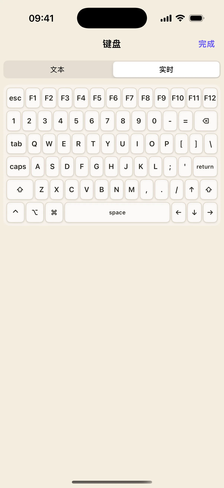

奶猫妙控的氛围编程布局面向 Mac 上的 Codex 桌面应用。电脑负责运行任务，手机显示当前任务状态，并提供常用操作、输入和导航。它适合放在键盘旁边，让你在阅读代码或等待任务时，随手查看下一步需要处理的内容。
先在 Mac 打开实际任务
完成奶猫妙控配对后，启动 Codex 并打开一个任务。状态区通过桌面集成读取任务信息，模型、推理强度、快速模式和批准状态随任务更新。首次使用先核对手机显示的任务，再发送操作，避免把指令送到另一项工作。
常用操作留给专属按钮
布局提供任务相关控制、实时键盘、轨迹球、滚轮与边栏导航。手机键盘可以补充简短说明；较长的提示词可以先在文本键盘整理，检查后再发送。按钮的可用状态取决于当前任务和 Codex 版本。

重复的文字可以保存下来
如果你经常发送相似的检查要求，可以把文字绑定到自己的按键。预设文字支持列表与不同发送方式，也可以扩展成桌面自动化。应把每个按钮命名为实际动作，让未来的自己看一眼就知道将发送什么。
什么时候换到终端布局
氛围编程用于 Codex 桌面任务；需要在 Mac shell 中执行命令或查看终端输出时，使用独立的终端预设。两者共享奶猫妙控连接，但任务控制与 shell 会话各自管理。Codex 的账户、权限和模型可用性仍由 Codex 决定。
开始使用
- 在 Mac 启动 Codex 并打开任务。
- 手机选择「氛围编程」，核对状态区。
- 测试输入与导航，再按自己的习惯编辑常用按钮。
常见问题
手机会独立运行 Codex 吗？
不会。此布局控制配对 Mac 上的 Codex 桌面应用。
可以控制命令行程序吗？
命令行程序请使用「终端」布局；它提供在 Mac 上运行的独立 shell 会话。
本文对应 1.2.0。查看更新说明，或加入 iPhone / iPad TestFlight。